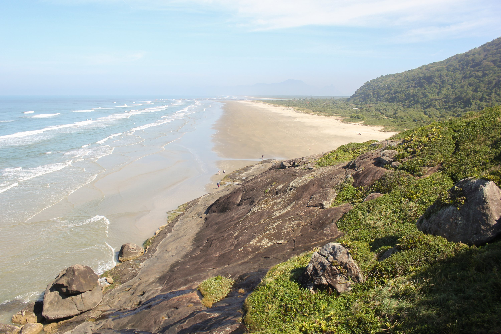
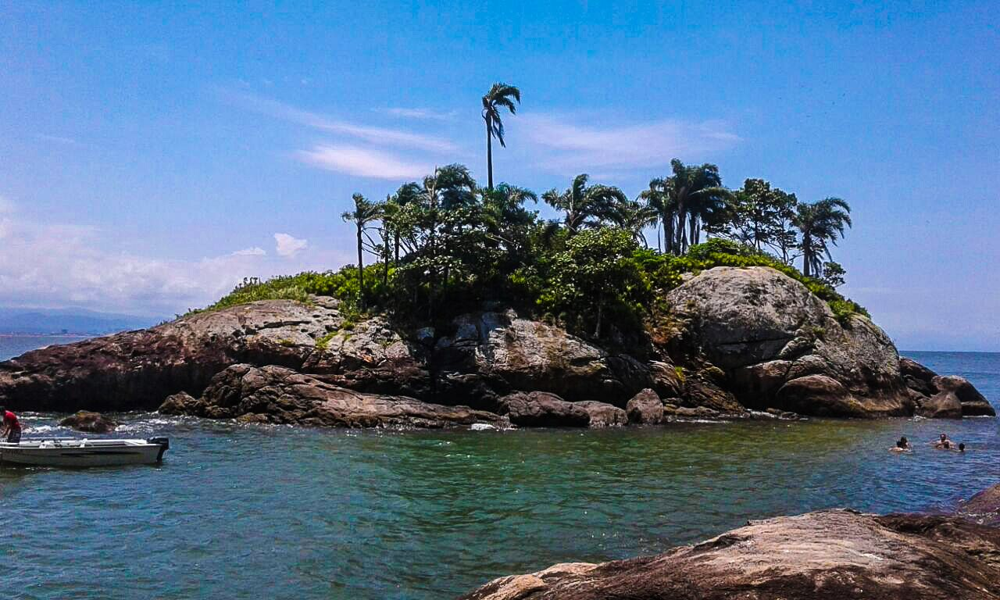
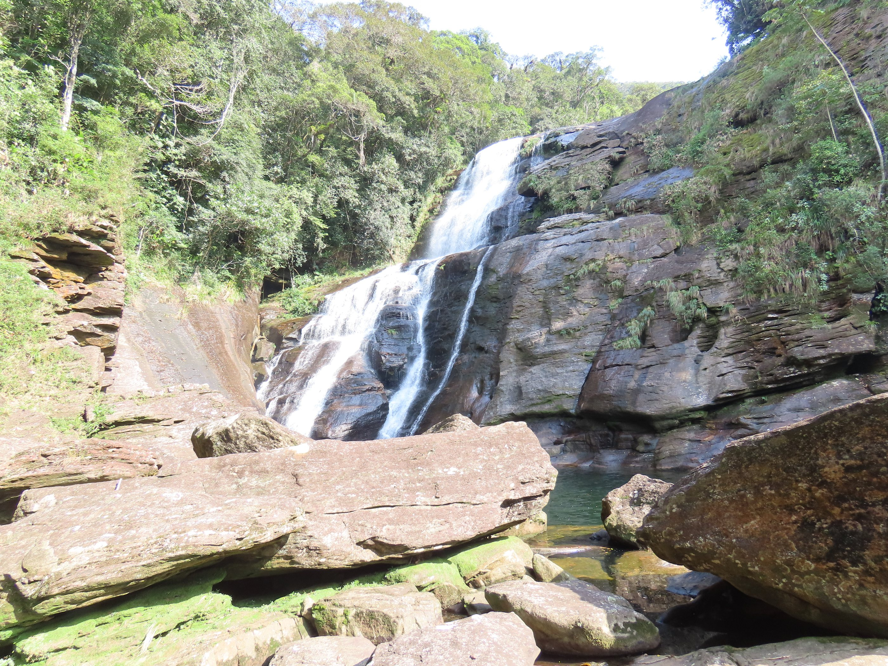
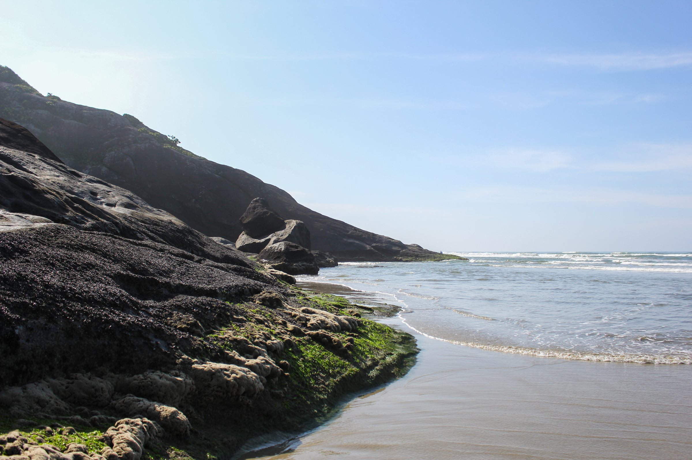
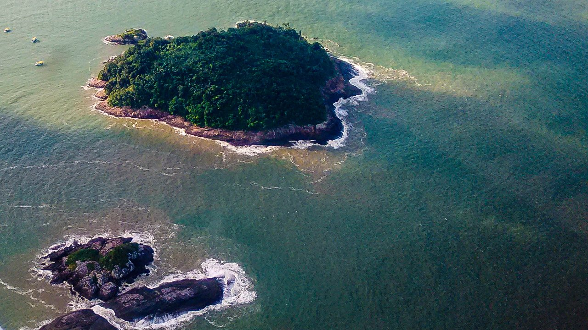

“Lugar exuberante, ainda mais com a atenção dada aos turistas, barco seguro com Mestre experiente. Vale a pena.”
Silvio Zampirolli · Google
4,8 no Google · Peruíbe, SP
G-TRIP Adventure · Ilha do Guaraú de barco.
Passeio de barco em Peruíbe (SP): rio, ilha e cachoeira no mar.
O passeio
Do rio à ilha, três paradas.
4,8 Google
-
01

Rio Guaraú
Pelo manguezal até o mar.
-
02
Foto: Damon Michellepis

Ilha do Guaraú
Piscina natural para mergulhar.
-
03
Cachoeira na Juréia-Itatins · Jufranfe

Praia do Arpoador
Cachoeira que cai na areia.
De perto
O litoral de Peruíbe.


Sem compromisso
Monte seu passeio.
Formato
Paradas
Quem vai
Adultos12+ anos
4
CriançasAté 11 anos
0
Período e data
4,8
Ver no Google
4 avaliações no Google
Embarque
Rio Guaraú, Peruíbe.
- Praia do Guaraú, Peruíbe - SP
- Com agendamento pelo WhatsApp
- (13) 99664-5411
Dúvidas rápidas.
De onde sai o barco?
Do Rio Guaraú, na Praia do Guaraú. A localização exata vai pelo WhatsApp.
Dá para fechar só para o meu grupo?
Sim. Barco privativo ou vagas em grupo.
O que levar?
Roupa de banho, toalha, protetor solar e água.